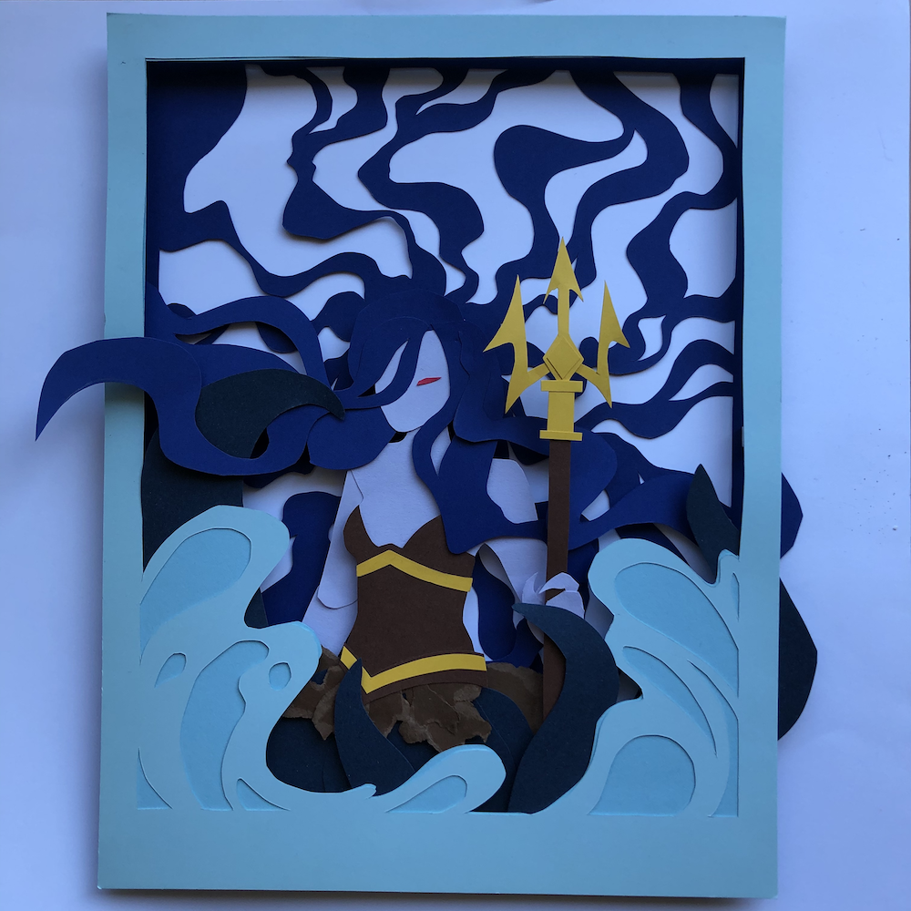

thessal paper
I produced this piece for a Realm of the Mad God arts and crafts contest. The contest parameters were pretty broad, simply requiring a RotMG-related project made with some form of craft. I work with paper occasionally, so I thought that a 3D paper piece would be an interesting endeavor. My topic of choice was Thessal the Mermaid Goddess, somewhat of a regular in my work.
I started with the background, consisting of a paper cutout of Thessal's wild hair; this is a bit of a defining aspect in the way I interpret this character, as I think the interaction of hair and water can be quite fascinating. Then I constructed the figure, with the bodice featuring some ripped paper for a new texture. Working in layers already brings an inherent 3D sense to the piece, but I used small 3D foam squares to enhance the dimension. The top piece is a frame of two layers, the light blue and lighter blue working to make the water/waves.
This was the first Discord contest that I placed 1st out of 10 in. The process was fun but challenging, and working with paper in a more 3D realm for the first time was a good gateway to future projects.
Colored cardstock; April 2020